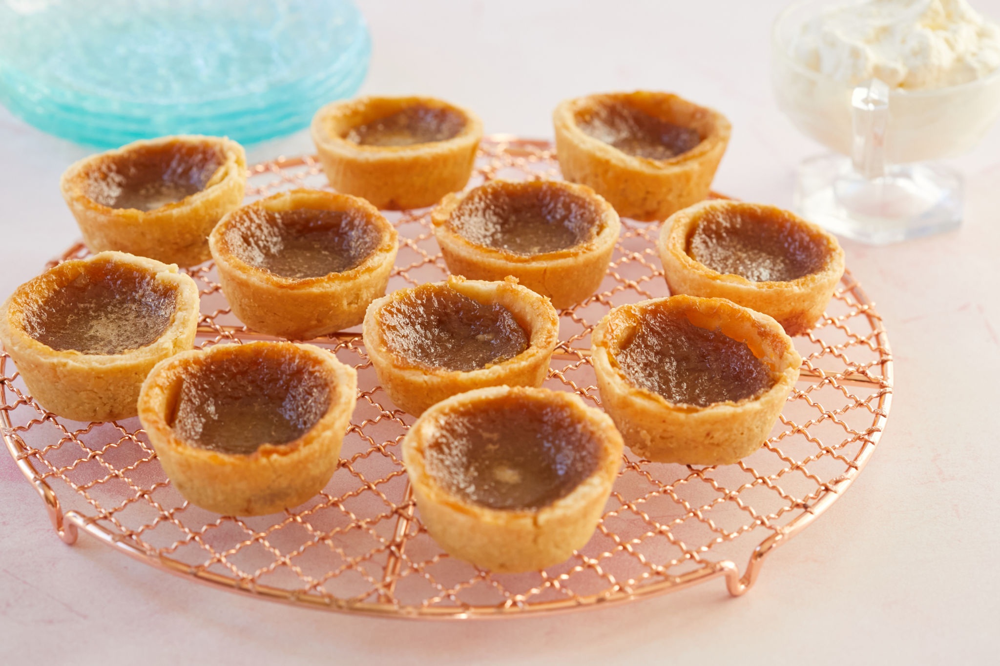

Butter Tart

Description
If you've never experienced the sheer bliss that is a butter tart, you're missing out.
Let's remedy that! These Easy Butter Tarts are bite-sized and full of flavor. Inspired
by the popular Canadian treat, these simple tarts are made with a Pillsbury™ Pie Crust
base and a decadently sweet, gooey filling.
Bonus: You likely already have everything on hand to make them! Get ready to bake the
best butter tarts around.
Ingredients
- Pillsbury Pie Crusts, softened as directed on box
- 1.5 cups firmly packed brown sugar
- 1/2 cup very soft butter (not melted)
- 1 teaspoon vanilla
- 2 eggs
Steps
- Heat oven to 350°F. Spray 18 regular-size muffin cups with cooking spray.
- On work surface, unroll pie crusts. With 3 1/2-inch round cookie cutter, cut 9
rounds from each crust, rerolling dough as necessary. Gently press 1 dough round
into each muffin cup.
- In medium bowl, beat remaining ingredients with spoon until well blended (mixture
will be slightly lumpy). Spoon about 2 tablespoons brown sugar mixture into each tart.
- Bake 20 to 25 minutes or until filling is set and crust is golden brown. Run knife
around edge of each tart. Cool in pan, about 30 minutes. Remove tarts to serving plate.
Serve warm or cooled. Store covered in refrigerator.